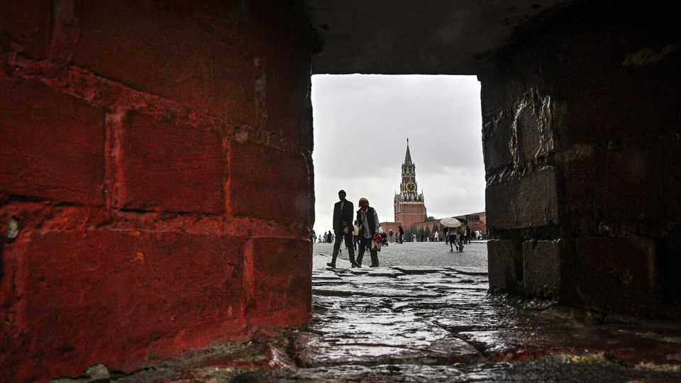

Why is Russia deliberately weakening its currency?
A strong rouble was hurting the budget

Aug 27th 2026
GOVERNMENTS AND central banks usually insist that they want a strong currency. Not, just now, in Russia. On August 5th the Ministry of Finance declared that it would increase its daily purchases of foreign currencies and gold by around 20%, from 5.4bn roubles (then $69m) in July to 6.5bn roubles. The rouble duly slid, from around 80 to the dollar in early August to 85 by the middle of the month, its lowest level since March (see chart).

A stronger currency means cheaper imports, lower inflation and less pressure on interest rates; a weaker one means the opposite. As Russians know well, a sudden slide can trigger financial panic, as it did after their country invaded Ukraine in February 2022 and Western countries imposed sanctions. In just over a fortnight the rouble lost two-fifths of its value against the dollar. Russians rushed to buy foreign currency and pulled cash out of banks, much of which they splurged on consumer durables and other goods.
But lately a strong rouble has been a curse—notably for the federal budget. In the first half of the year it averaged 77 to the dollar; the budget had assumed a rate of 92. Because Russian oil exporters (which are mostly state-owned or otherwise linked to the government) earn their revenue in dollars, their income translated into fewer roubles than expected. Oil and gas provide 20% of budget revenue.
Granted, the Gulf war, by gumming up the Strait of Hormuz and disrupting global oil distribution, has pushed oil prices higher: in the first half of the year the average oil price used by the government for tax calculations was $68 per barrel, against the $59 assumed in the budget. Even so, oil and gas revenue, at 3.7trn roubles, was 23% lower than a year earlier. The first-half deficit alone was 5.7trn roubles, or 2.5% of annual GDP, against a projected 3.8trn (1.6%) for the full year. A persistently strong rouble would make the shortfall bigger.
As well as weakening the rouble, the government is looking for cash elsewhere. The Russian parliament has given the finance ministry the right to increase borrowing above the statutory limit without further approval. More inventively, the government has been demanding that Russian businessmen make “voluntary” contributions to the federal budget, including money to help pay for the war against Ukraine. This initiative emerged from a meeting in March with Vladimir Putin, Russia’s president, about a windfall tax on past profits. Since the start of the year public-spirited bosses have coughed up 384bn roubles.
A weaker rouble could provide some short-term relief to Russia’s budget, but in the long run, it carries the usual downsides: higher inflation, dearer imports and lower real household incomes. The inflation rate has already ticked up, to 6% in June. This was partly due to a petrol shortage caused by Ukrainian strikes on Russian oil infrastructure. Nevertheless, a weaker rouble could push it higher. ■